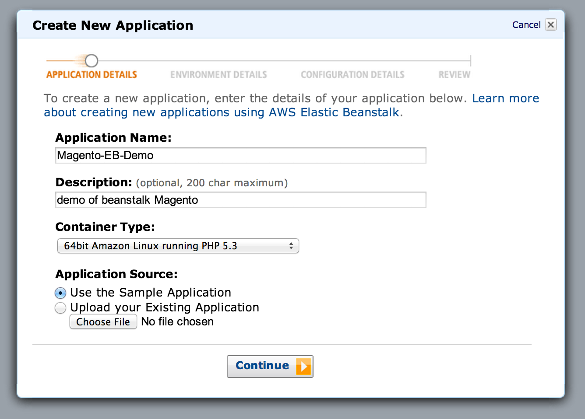
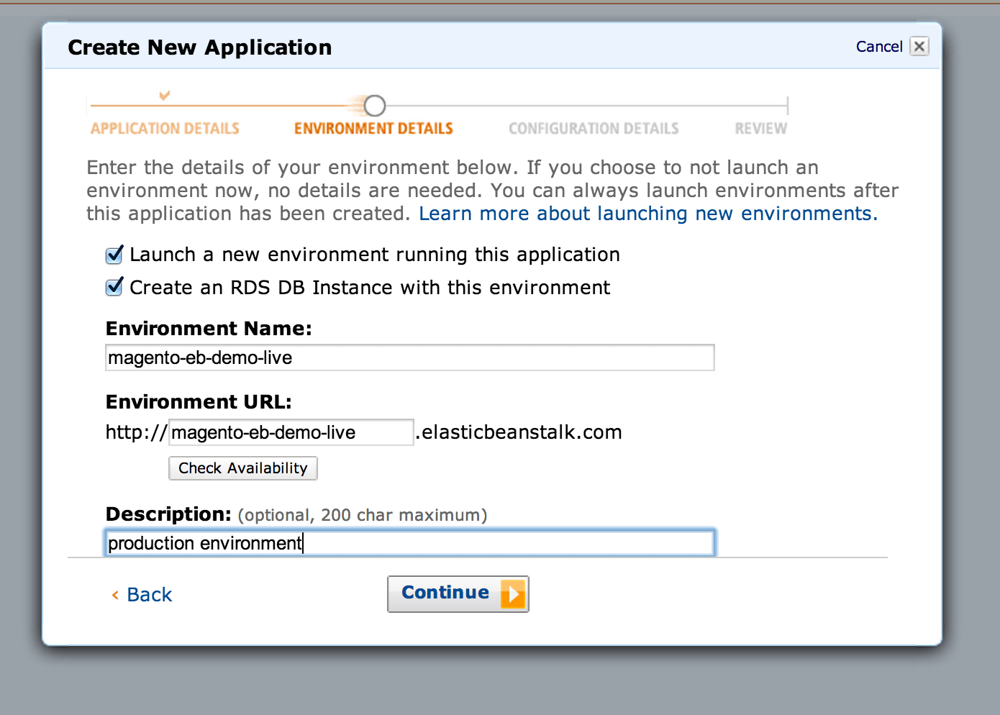
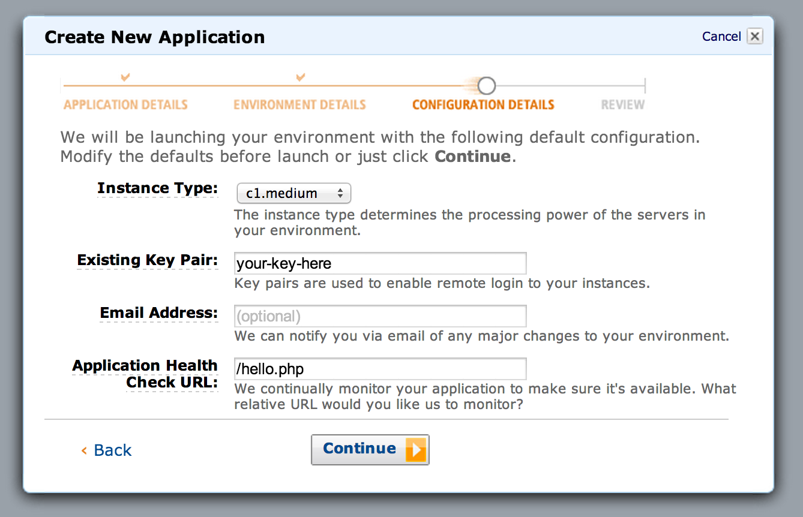
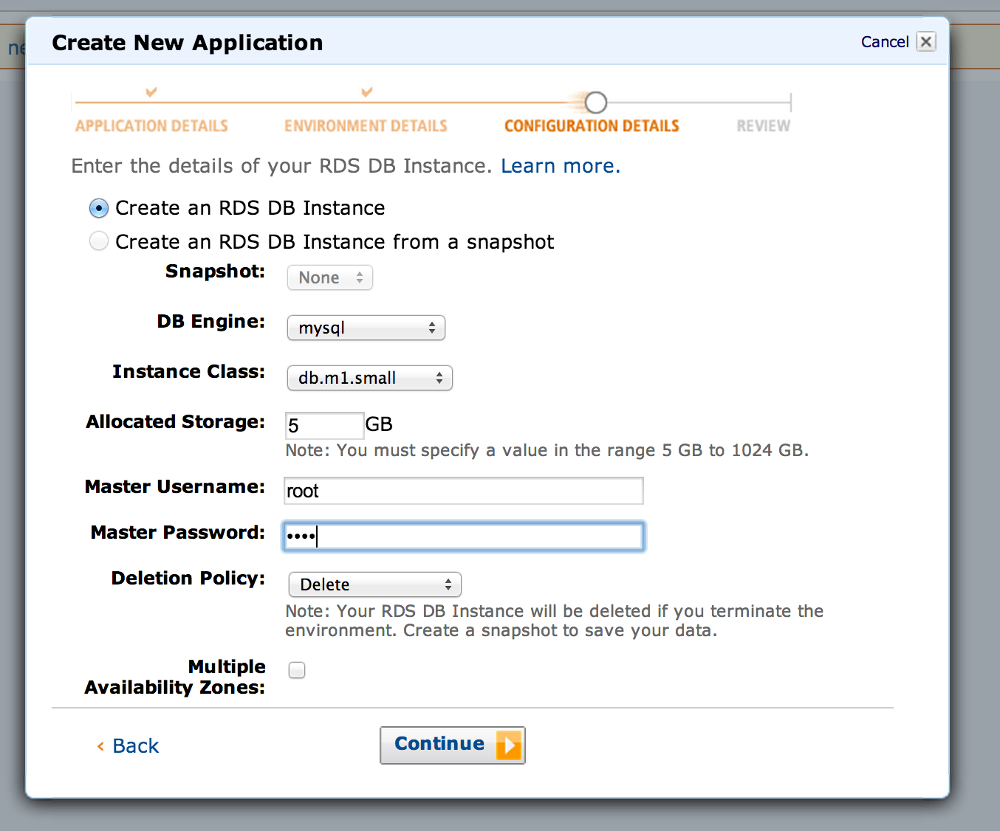
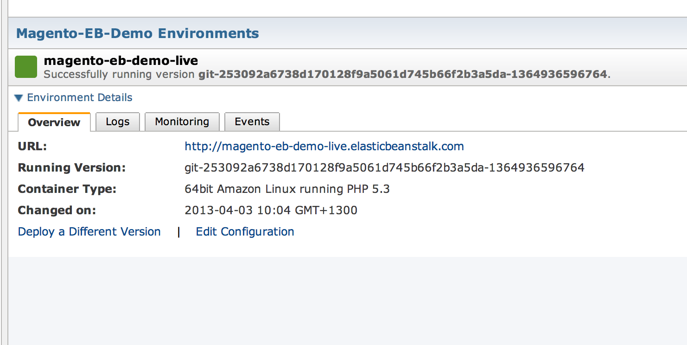
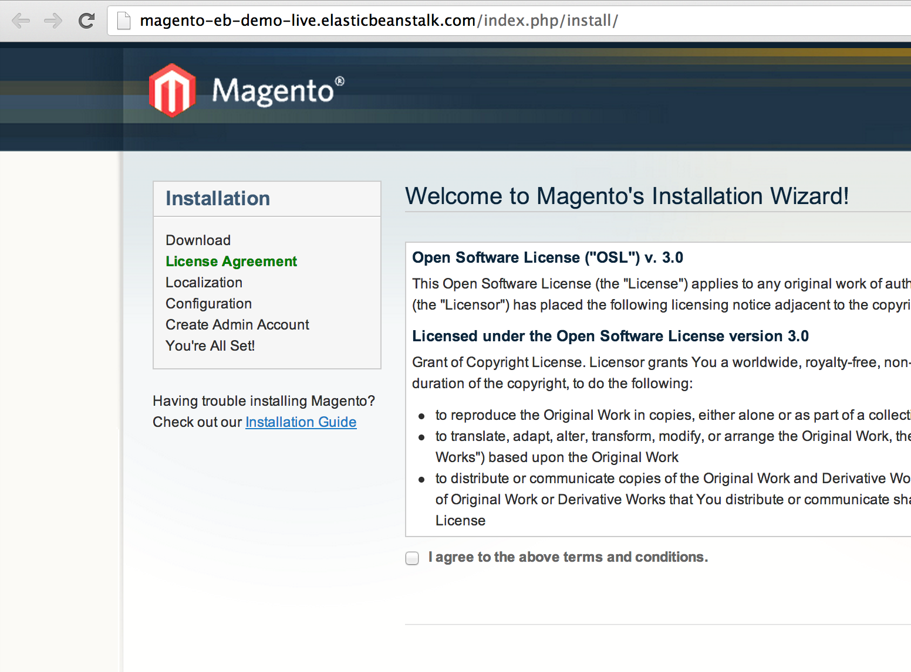
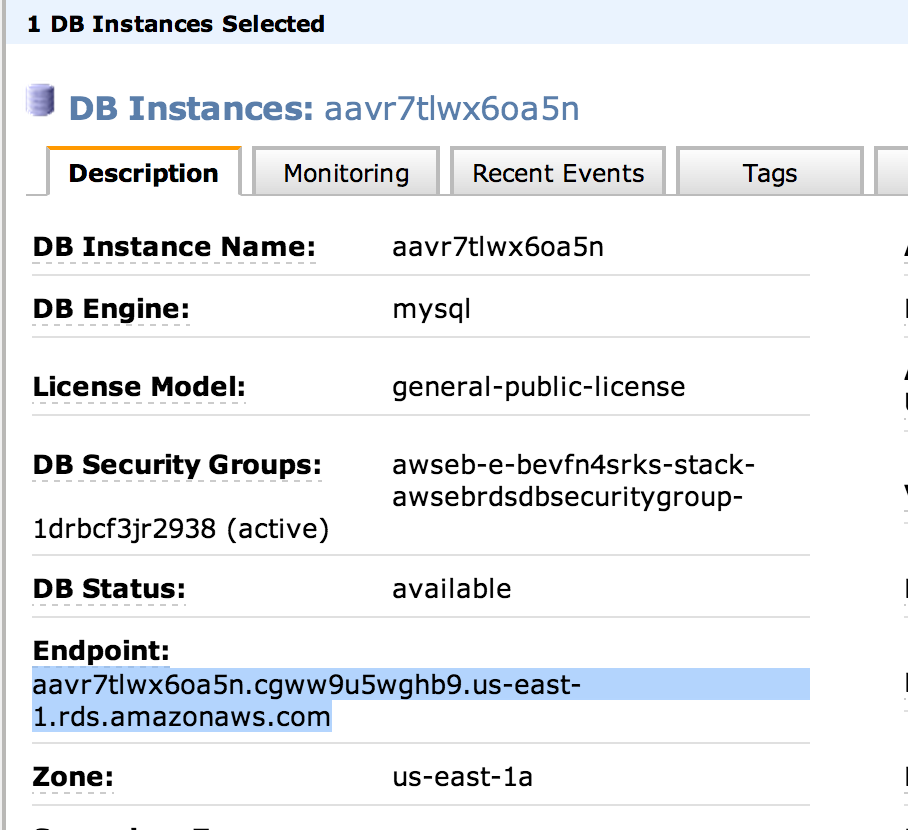
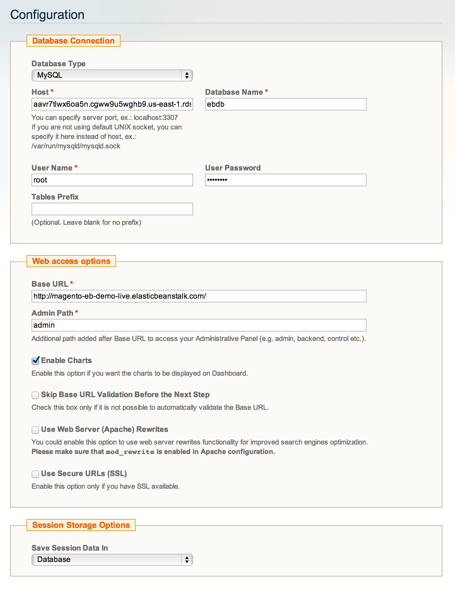
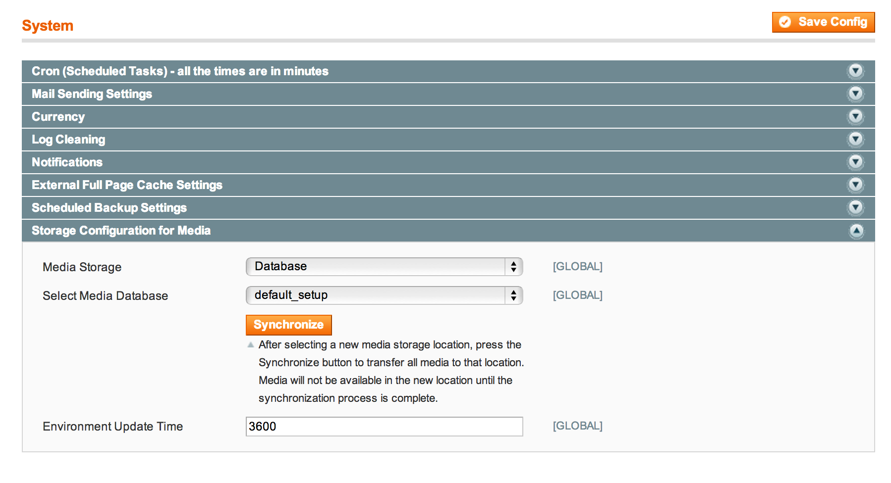

In my previous post I weighed up the benefits and limitations of Amazon’s Elastic Beanstalk hosting environment for Magento and took a very vague look at the costs. In this post I will run through the actual setup of a very basic Magento install ‘in the cloud‘ and the process of deploying changes. The goal for this initial setup is to keep everything bone stock as possible, we want minimal maintenance effort and an automated environment.
If we have some time at the end, we’ll do some stress testing of the platform to see how it handles customers. Benchmarks will have to wait, stay tuned.
The Tools
For this tutorial we’ll be working in a linux environment. I used a small EC2 server with the AWS default Linux AMI as the setup box, it’s nice and fast being on the same network as the Beanstalk platform. Make sure you have the following installed.
- AWS EB tools, and the getting started guide
- git,
sudo yum install git - ruby,
sudo yum install ruby - python 2.7,
sudo yum install python27– this one is a bit of a pain on the AWS default Linux AMI, you’ll need to hack in explicit use of the 2.7 binary in the AWS scripts. Or, heaven forbid, set it up properly and compile from source…
Once you have those in place, you should be ready to get Magento and the Beanstalk environment setup.
Preparation of the Magento store
Firstly download and extract the latest magento.
wget http://www.magentocommerce.com/downloads/assets/1.7.0.2/magento-1.7.0.2.tar.gz tar xzf magento-1.7.0.2.tar.gz cd magento # From the AWS EB tools AWSDevTools-RepositorySetup.sh |
Now we create a simple hello.php PHP file in the root of the Magento store – it’ll serve as a basic heartbeat test in the Beanstalk environment, it could be extended to check other health measures for Magento but for now it’s just to ensure the regular heartbeats don’t interfere with the install.
# Just put a helloworld in the file like this <?php echo "Hello World"; ?> vi hello.php |
At this point we can make our initial commit, a vanilla un-installed Magento, and a heartbeat file.
git commit -m "initial check-in" |
Leave this Terminal window open, we’ll be back to it shortly, but now let’s set up the Beanstalk Application and Environment we’ll use for testing.
Preparation of the Beanstalk Environment
This part of the tutorial we’ll just be setting up the Sample app through the Elastic Beanstalk web console, so follow the steps Amazon provides here.
- When prompted create an RDS database server as part of the environment.
- When setting up the load balancer choose the /hello.php file as the target
Here’s a series of screenshots that should guide you through the setup. Note which name you use for your Application and Environment, you’ll need them in the next step.




Take note of the database credentials, you’ll need those for installation. Once created it’ll take a few minutes for the environment to start up. Note that the sample app will not actually go green because it doesn’t have the required heartbeat file hello.php. But it will once we deploy, read on.
Deploy Magento and Install it
In a normal production scenario, our Magento code would already be ‘installed’ and have an app/etc/local.xml file filled with the MySQL connection info (and other environment configuration) before we deploy the code. In this case, to make things easy we’re just going to install Magento in the environment, which will run the setup scripts on the database and have it ready to use.
From the root of your Magento setup directory run these commands.
# You'll need to enter your AWS credentials and your # Elastic beanstalk application/environment details git aws.config # This will push the latest code to your Beanstalk git aws.push |
That last step, the git aws.push is what deploys your code to the cluster. The upload will take a bit of time to send, once it has, you should see your Beanstalk environment version update in the web console to look like this. It should be green after it’s had time to deploy.

If everything has gone to plan, when you browse to your beanstalk URL, you should see the Magento install screen like this. We’ll go ahead and do a normal install.

To get the database info for install, we’ll need to check the RDS control panel and input it.

You need the database host, database name, database username and password.

Note: During install elect to keep sessions in the database.
Once installed, you should see the normal Magento home page and admin screen. But, the observant among you will note, that the changes made during install will not persist should our instance die and get replaced. We need to commit our newly created local.xml, so the installation configuration becomes part of our code base.
If you’re comfortable with creating local.xml files – you can just create one and commit it, if not, it’s easy to fetch it from your beanstalk instance – you can use the key you specified when creating the environment. Then commit it and push it as a new release.
# From the root of your magento setup directory scp -i ~/path/to/your/key.pem ec2-user@your-ec2-server-ip.compute-1.amazonaws.com:/var/app/current/app/etc/local.xml app/etc/local.xml git add app/etc/local.xml git commit -m "Adding the installation config" git aws.push |
Once this release is loaded, your store should still be the same, but now your installation is part of your code.
If we were only running a single instance, we could stop here, but in a multi-instance cluster, this Magento store won’t work as the cache and media are instance local. Let’s get it cluster-ready.
Configure Magento for Beanstalk Cluster
There is unlimited scope for configuration here, we’ll just do the bare minimum to get a site running for now. The two main things are to ensure caching and media are shared by all nodes in the cluster to do that we need to update the configuration.
Create an Amazon Elasticache memcached cluster with one or more nodes, and note the node address(es). There’s a really important note about security groups on that page, I’m pasting it below for your benefit:
Configure your Amazon ElastiCache Security Group to allow access from the Amazon EC2 security group used by your AWS Elastic Beanstalk application. For instructions on how to find the name of your EC2 security group using the AWS Management Console, see Amazon EC2 Security Groups. For more information, go to Authorize Access in the Amazon ElastiCache Getting Started Guide.
What it means is that in order for your Beanstalk nodes to access the memcached nodes in Elasticache, you need to authorise the security group. The linked guide will show you how, but don’t forget, otherwise it’ll never connect.
Update your configuration
In your local.xml add extra cache configuration – Nexcess published a great guide, or refer to the local.xml.additional file in app/etc/. In this basic setup we’ll just use the memcached node as the first layer fast cache, and the database as the second layer slow cache with tag support.
That option is one of many, Colin Mollenhour did an excellent presentation on caching last year at Magento Imagine, it’s highly suggested you have a read of his slides. Redis would be a great backend option, but has an admin overhead which we’re trying to avoid in this setup.
It’s also worth changing the configuration to use memcached for the session storage, but not required.
Extra for experts:
Elasticache uses clusters of memcached nodes, there are features in Elastic cache for node discovery, which would mean you could add and remove nodes and customize Magento to automatically detect and use new nodes. For now we’ll use static configuration.
Once you have made the changes to local.xml, you can commit them and push them as you did earlier. To force clear the existing cache, log onto the running beanstalk instance and delete the var/cache folder (and var/session if you configured it to use memcached). Because the cache files are not part of your git repository, you could also simply kill the EC2 server and start another – the configuration it uses will be the updated version.
Update Media storage
To store media in a shared location, we could use NFS like I do in my wordpress cluster guide, but that would require maintenance of NFS server/client software, and the goal here is to keep things as stock-standard as possible.
Instead, we can use the built in Magento capability to store any media in the database. We could use a separate RDS server, but in this case we’ll just use the one that’s already running – the load should be minimal because the CDN will serve media for us.
This is a Magento configuration option as shown:

And with that, we’re done, we have a bare-bones cluster running on a vanilla AWS Linux AMI and a vanilla Magento.
More Advanced Configuration
To complete this setup would take many more hours of work – you’ll need to configure a CDN and setup an external email service such as Amazon SES. You’ll also need to get cron running for a clustered environment, which would mean running it externally and calling the web facing /cron.php – to ensure it only runs once, and it’s load is evenly distributed.
For performance and efficiency it also pays to use some form of page caching. This could be a Magento specific extension (or enterprise edition feature) or could be one or more Varnish nodes placed in front of the ELB load balancer. Again that’s a whole separate book!
There’s surely going to be hundreds of things I have missed here too, so expect to do some debugging for yourself, but this should be a pretty good headstart.
Benchmarks
Will have to wait for another day sorry folks, this post turned out to be a monster.
Enjoy the Beanstalk and please comment with any feedback or errors.
Thank you for this great post.
I’m hope your blogging further about the amazon cloud.
I’m looking forward to test our magento installation on a elastic beanstalk.
I’d be very interested in a follow-up to this post. I’m curious how to get the RDS credentials into the local.xml config file since the typical way to do this without checking your secrets into git is to use environment variables, but since magento reads these in via XML, I’m afraid we’d have to write some sort of custom script to download the xml file from an S3 bucket, make sure those files are secure and then provide the access credentials to the ec2 instance so it can fetch the file and copy it to the proper location upon deployment. I’m thinking you could set this up using a configuration file (inside a .elastibeanstalk/environment.config file) that would use the “sources” or “files” config options to do this automatically…